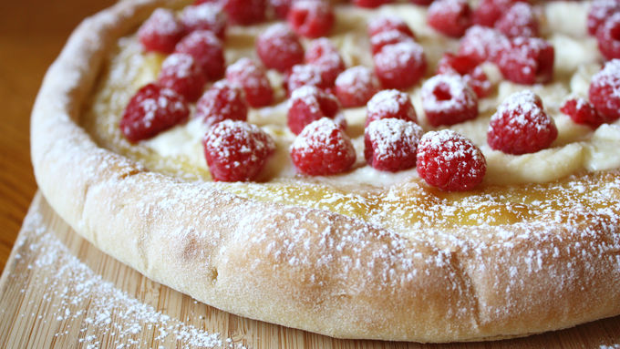

Raspberry-Mascarpone Pizza

A delicious, refreshing dessert pizza made with fresh raspberries and airy, light mascarpone cheese.
Ingrediants
- 1 pizza crust (homemade or store-bought)
- 1 tablespoon butter, melted
- Sugar for sprinkling
- 1/4 cup lemon curd
- 1/2 cup mascarpone cheese
- 2 tablespoons powdered sugar, plus more for dusting
- 1/2 teaspoon vanilla extract
- Fresh raspberries for sprinkling
- Preheat oven to 450°F. Roll out pizza dough and curl up edges to make a crust.
- Brush middle of pizza dough with melted butter and sprinkle with sugar. Bake for about 8 minutes or until golden brown.
- Remove from oven and spread lemon curd on pizza crust. Bake two more minutes.
- Allow crust to cool slightly. In the meantime, beat together mascarpone cheese, powdered sugar and vanilla extract. Once pizza has cooled, spread on top of lemon curd.
- Spread as many raspberries as you want on top of the mascarpone cheese mixture. Sprinkle entire pizza with powdered sugar. Serve immediately.